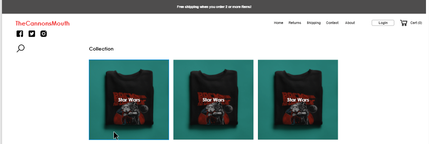
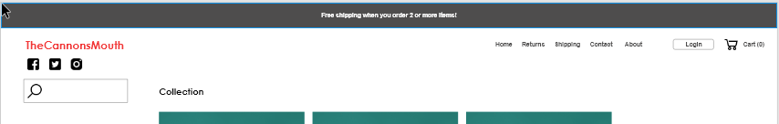

Search button needs to be larger (44px minimum) or search bar needs to expand on mobile.
The
touch/click target for search is
not easily defined.
On mobile, the search button should absolutely not take the user onto a completely new page.
In Depth
This search icon is a little too small for a touch target on tablets and
smartphones.
While I was testing this, the search icon was hard to "hit" because of how small it is. It
is not at the recommended 44px for a touch target.
I also found the smartphone search experience to be lacking. I think that a better way to handle
search on smartphones is to have the search bar expand. And to position the search bar below the
menu and headline.
The search bar should not be directing the user to a different page. A better approach would be
to have the search bar be persistent, a la Google Search.
The search bar should be persistent on smartphones.
The search experience on desktop can also be enhanced. I think it should be done by having an
onclick state. Click on the icon to reveal the search box and then click again to exit out of it
if the search was not intended.

Proposed change. Click on the search to reveal a search box

Search box visibile